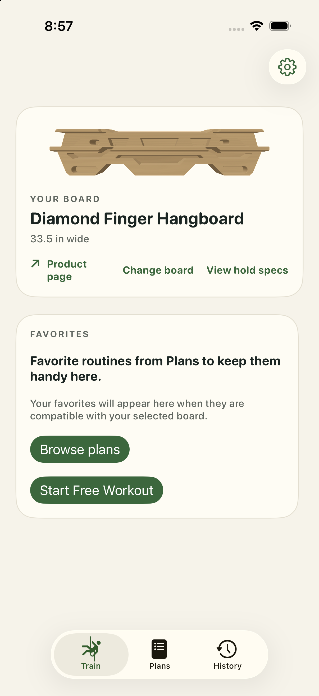
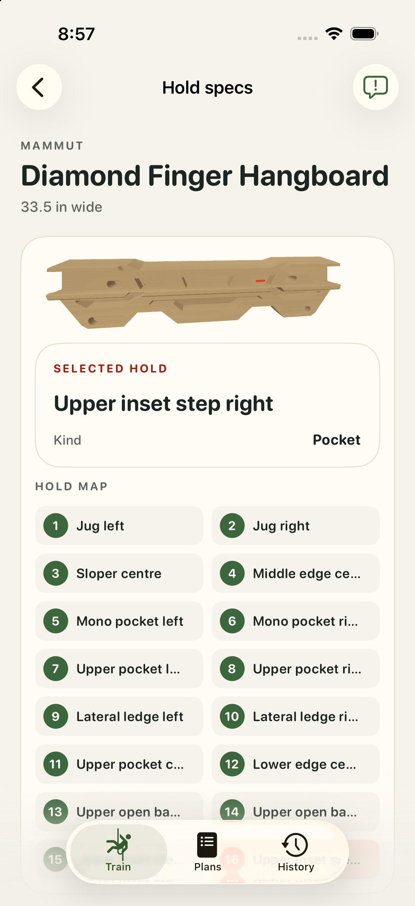
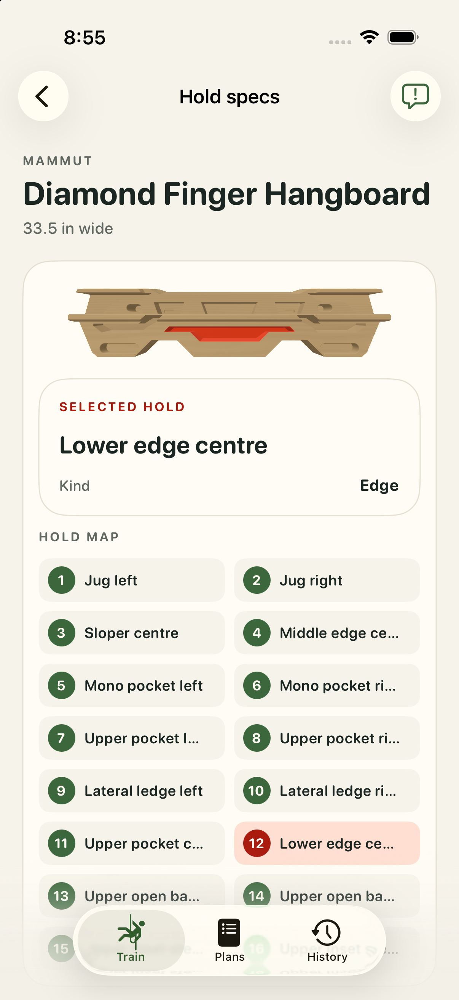
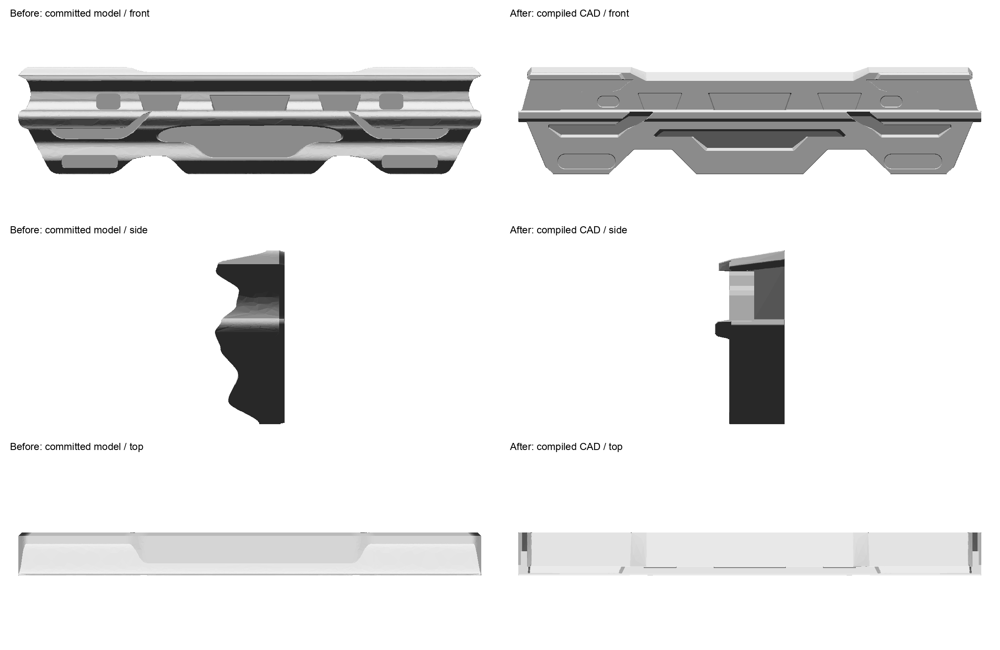
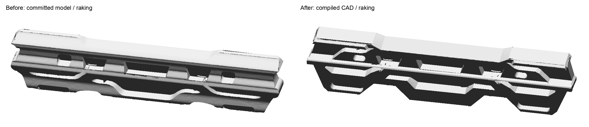
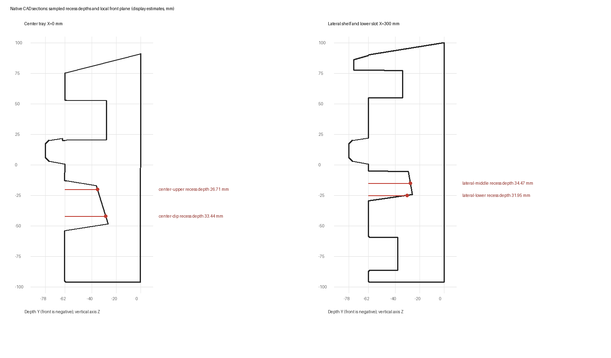

The revised CAD uses the existing wood finish. Opus checked the app views and found no source-supported blocker. Human acceptance remains pending.
Depths, height, thickness, floor slopes and the side profile are display estimates. The pocket and shelf floors tilt slightly down toward the front. The generic golden-tan finish is not a calibrated factory walnut colour.
Evidence and validation · Current validation record · Final Opus opinion



Prior committed asset on the left; revised exported CAD on the right. These are geometry previews; wood is applied in the app.


Sections show the authored recesses and estimated floor slopes.

Complete app screenshots before and after · Opposite app orbit · Manufacturer product photo · Manufacturer manual drawing
Validation: 1,278 iOS tests and 706 Python tests passed, with no failures. All 64 packages stage correctly. Does this Mammut look right now?